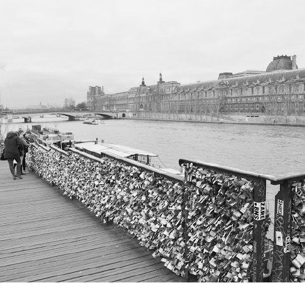

Tôi sẽ tạm dừng những câu chuyện về đời du học gian khó để lãng đãng một lát trong chương này, để được mơ, được hát.
Cuộc sống là như thế, ít nhất đối với tôi. Có gian khó thì cũng có tận hưởng, có khắc nghiệt thì cũng có lãng mạn, mơ màng. Cuộc sống luôn cân bằng và công bằng với những ai biết sống. Mỗi khi khó khăn, tuyệt vọng tôi lại tìm cho mình những góc yên tĩnh, thơ mộng. Để xả hết, để nạp đầy. Và ở Paris, nói đến lãng mạn, không thể không nhắc đến con sông và những cây cầu.
Con sông của Paris….
Vẻ đẹp lãng mạn của Paris phần nhiều được tạo nên nhờ dòng sông Seine chảy vắt ngang từ phía Tây sang phía Đông với chiều dài gần 13km.
Nếu nói chính xác, không phải sông Seine mà là sông Yonne chảy qua Paris (hoặc ít nhất cũng là cả hai). Tại sao lại thế? Bởi con sông chảy qua Paris là hợp nhất của hai dòng sông Yonne và Seine, gặp nhau tại Montereau-Fault-Yonne cách Paris 75km về phía Nam, tuy nhiên, dòng Yonne với lưu lượng chảy mạnh hơn nhiều lẽ ra phải là kẻ “bề trên” và đóng góp nhiều hơn cho con sông chảy vào Paris. Tuy nhiên, từ xa xưa (từ thời của người Gaulois cổ đại) người ta vẫn muốn gọi nó là sông Seine bởi cho rằng nguồn gốc của con sông này đến từ những vùng đất thần thánh, linh thiêng.
Sông Seine chảy qua Paris và chia cắt Paris thành hai phần: tả ngạn và hữu ngạn. Cách xác định tả ngạn và hữu ngạn là theo hướng dòng chảy của con sông. Hữu ngạn (bờ phải) là vùng đất nằm ở phía Bắc của Paris so với sông Seine và tả ngạn (bờ trái), tất nhiên, ở phía Nam. Có nhiều người mới đến Paris hoặc ở Paris mà không tìm hiểu về chuyện này, khi nghe tả ngạn hữu ngạn thì không hiểu, tôi nhớ có cô bạn Pháp gọi điện cho tôi bảo “đang đứng đợi cạnh sông Seine, đầu cầu Neuf nhé”, tôi hỏi “Bờ phải hay bờ trái”, cô ấy bảo “Ngốc thế mà cũng hỏi, bờ phải hay bờ trái còn phụ thuộc người ta quay mặt về hướng nào chứ.”
Để nối hai bên tả ngạn hữu ngạn ấy, có cả thảy 37 cây cầu và cầu vượt cho người đi bộ. Mỗi cầu một vẻ, một tính cách, một đặc điểm, một câu chuyện lịch sử.
Cây cầu già nhất còn tồn tại của Paris lại có cái tên Pont Neuf (nghĩa là cầu mới). Được hoàn thành từ đầu thế kỷ XVII, cây cầu nối liền đảo trung tâm (nơi sông Seine tách ra thành hai nhánh) với hai bên bờ sông. Trông nó không thật cổ kính sau nhiều lần được nâng cấp cải tạo nhưng nó đã đứng đó chứng kiến nhiều thăng trầm suốt chiều dài lịch sử của Paris.
Cây cầu mới nhất có lẽ là cầu vượt Simone de Beauvoir, khánh thành cách đây không lâu: một cây cầu vượt bằng gỗ dành riêng cho người đi bộ với những đường cong cầu kỳ, hiện đại.
Cây cầu đẹp nhất, vua của các cây cầu ở Paris là cầu Alexandre III, gần Invalides đã được nhắc đến ở chương trước. Nó là biểu tượng cho mối quan hệ Nga - Pháp, bởi đó là quà tặng của Nga hoàng Alexandre III cho chính phủ Pháp. Khi đến đây bạn sẽ choáng ngợp trước kiến trúc lộng lẫy, cầu kỳ của cây cầu, sẽ đắm chìm vào từng họa tiết trên mỗi tác phẩm điêu khắc, những cột đèn ở hai đầu cầu và dọc thân cầu. Đêm về cầu càng thêm lộng lẫy bởi hệ thống thắp sáng của nó và của các công trình nghệ thuật, kiến trúc xung quanh. (Gần cầu Alexandre III không chỉ có Les Invalides mà còn có Grand Palais và Petit Palais là hai bảo tàng nghệ thuật, trung tâm triển lãm và nơi trình diễn các show thời trang nổi tiếng ở Paris.)
Cầu cao nhất (so với mặt sông) ở Paris là Pont Garigliano, nhỏ nhất là Pont Notre Dame; cầu dài nhất là Pont National, cầu tấp nập giao thông nhất là Pont d’Austerlitz…
Một cây cầu nữa, tuy nhỏ nhưng không kém phần nổi tiếng ở Paris là Pont des Arts (cầu nghệ thuật) nhưng lại được gọi là cây cầu tình yêu của Paris. Đó là một cây cầu xinh xắn ở gần bảo tàng Louvre, nơi còn được gọi là Cung Nghệ Thuật (vì thế cái tên Cây cầu của nghệ thuật nhưng lại được biết đến nhiều hơn với tên không chính thức “Cây cầu tình yêu”).

Khóa trên cầu tình yêu. (Ảnh: Tác giả)
Cây cầu được xây dựng như một cầu vượt qua sông Seine cho người đi bộ, sàn lát gỗ, hai bên thành cầu là những tấm lưới sắt bảo vệ. Đó là nơi lý tưởng cho các bạn trẻ đến tụ tập trên cầu vào những ngày và đêm đẹp trời, đi dạo, ngắm cảnh hay ngồi đàn hát, ăn uống, nhìn xuống dòng sông và những chuyến tàu qua. Chính những lưới sắt hai bên thành cầu cho bạn cảm giác như tầm mắt của mình không bị chặn lại, ngồi bệt xuống cầu vẫn có thể nhìn mọi cảnh vật trên sông. Nhưng bắt đầu từ những năm 2008, có một phong trào, một cái mode lan ra rất nhanh: những đôi yêu nhau đến cầu thề ước, cùng nhau khóa một ổ khóa bằng thép hay bằng đồng lên tấm lưới sắt bảo vệ, rồi ném chìa khóa xuống dòng sông.
Chiếc khóa trở thành một hẹn ước của tình yêu, một lời thề thủy chung không thay đổi (không thể gỡ bỏ) để rồi lâu lâu họ trở lại, tìm bằng được chiếc ổ khóa (có thể đã bị phủ lên bởi hàng ngàn chiếc khóa khác) và tự hào vì tình yêu của họ vẫn còn, như chiếc ổ khóa kia. Đấy là trong hoàn cảnh lý tưởng nhất, còn tôi không biết trong hàng chục, hàng trăm ngàn các đôi tình nhân đã cùng nhau đến cầu làm lễ “khóa tình yêu”, liệu có bao nhiêu đôi trở lại đầy đủ hai người, vẫn tay trong tay, vẫn yêu thương thắm thiết. Có thể không ít người trở lại tìm chiếc khóa của mình để mà rơi lệ xót xa, hay phá lên cười cho một thời yêu đương lãng mạn và thơ ngây, cái khóa cũng có thể trở thành một “vết sẹo tình yêu” mà nhiều người không bao giờ muốn nhìn thấy nữa. Nhưng chỉ sau thời gian rất ngắn, những chiếc khóa ban đầu có vẻ ngộ nghĩnh đáng yêu thơ mộng, đã trở thành một hiểm họa thực sự: các tấm lưới sắt phải oằn mình gánh thêm sức nặng của hàng ngàn ổ khóa, có thể rơi xuống dòng tàu thuyền qua lại bên dưới bất kỳ lúc nào. Thành phố phải cử người đến cắt bớt khóa đi, tuyên truyền khuyến cáo các bạn trẻ dừng lại để bảo vệ cây cầu. Nhưng vô ích. Các ổ khóa lớp này chồng lên lớp khác phủ kín hai bên thành cầu. Năm 2014, một tấm lưới sắt đổ sập xuống, người ta cân được 520kg khóa các loại. Với 37 tấm lưới sắt như thế, cây cầu chịu thêm sức nặng gần 19 tấn “thề ước tình yêu”. Và thế là các tấm lưới sắt bị dỡ bỏ, người ta phải thay tạm, hoặc ốp đè ra ngoài bằng những tấm gỗ để ngăn chặn các ổ khóa mới. Và cũng ngăn luôn tầm mắt của bạn khi ngồi trên cầu. Cây cầu vì thế xấu xí đi rất nhiều. Đó chỉ là một trong vô vàn những câu chuyện về những cây cầu của Paris: mới có, cũ có, vui vẻ có, kỳ bí cũng có. Những cây cầu, và dòng sông góp mình vào vẻ đẹp và sự lôi cuốn đến lạ kỳ của thành phố này.
Nếu có dịp đến Paris, đừng bỏ qua cơ hội làm một chuyến du lịch trên sông Seine bằng thuyền để chiêm ngưỡng các cây cầu và các công trình kiến trúc dọc hai bên bờ sông. Không hiểu vô tình hay cố ý mà hầu hết các điểm du lịch, những nơi dừng chân đẹp nhất Paris đều nằm gần hai bờ sông Seine và điều đó càng khiến chúng trở nên lộng lẫy. Có nhiều cách để đi thuyền ngắm cảnh dọc sông. Bạn có thể chọn những chiếc Bateaux Mouches cho một chuyến đi chừng 1 giờ 15 phút không có điểm dừng: tàu sẽ khởi hành từ Pont de l’Alma, đi xuống hướng đông đến Pont de la Sully (gần Notre Dame de Paris), rồi quay đầu đi dọc lên phía Tây cho đến qua Tháp Eiffel rồi quay lại điểm khởi hành. Nếu không, có thể lấy Bateaux Bus hoạt động như những chiếc xe bus trên sông với các bến dừng là các thắng cảnh nổi tiếng, bạn có thể rời tàu, lên thăm quan rồi lại về bến, đợi chiếc tàu tiếp theo. Cuối cùng, nếu có điều kiện, có thể chọn một số tàu lớn, sang trọng đi dọc sông trong khi bạn dùng bữa trưa hay bữa tối trên tàu. Thời gian lý tưởng cho một chuyến đi không có điểm dừng là lúc gần tối (khoảng 16 giờ 30 vào mùa đông và 20 giờ 30 vào mùa hè), như thế, khi đi bạn sẽ được chiêm ngưỡng cảnh vật trong ánh sáng ban ngày và khi về là vẻ đẹp của thành phố lên đèn.
Nếu có nhiều thời gian hơn, hãy đi bộ dọc sông Seine qua các điểm du lịch. Có rất nhiều những điểm nhìn (Point de Vue) dọc hai bờ sông, nơi bạn có thể phóng tầm chiêm ngưỡng các công trình kiến trúc cổ soi bóng xuống mặt nước, nơi mà bầu trời hòa mình xuống dòng sông và nhân lên cái vô hạn của tự nhiên, cái đẹp không giới hạn của cảnh vật. Hãy ngồi lại một chút nơi yên tĩnh để ngắm dòng sông, nghe tiếng sóng vỗ vào bờ đá (hay vỗ vào lòng bạn) và cảm nhận cái đẹp bằng tâm hồn bạn.
Và con sông của đời tôi…
Tôi rất thích được ngồi bên bờ sông ngắm nhìn dòng nước chảy. Từ lâu rồi, từ thủa nào không biết, tôi ví đời mình như một dòng sông: có lúc êm đềm, có khi sóng dữ, cứ chảy mãi, mải miết với khát vọng vươn mình ra biển lớn để sục sôi, chảy mãi không thôi. Ngày xưa, cạnh sông Hồng, thời chưa ai biết đến “Bãi Tre” ở gần cầu Thăng Long (tôi cũng không biết bây giờ bãi ấy có còn không), nơi chỉ là một bãi cỏ xanh, vài tảng đá sát bên dòng sông và một rặng tre xanh ngắt, không một bóng người qua lại, tôi đã thích ngồi một mình nơi đó mà hát “Chảy đi sông ơi”.
Khi còn ở Hà Nội, tôi thích ra những bãi hoang vắng như thế dọc sông Hồng, ngồi ngắm sông và suy nghĩ miên man. Nếu có thể so sánh, tôi thích sông Hồng hơn sông Seine và cảm thấy giống với mình hơn: tự nhiên hơn, hoang dã hơn, biến đổi không ngừng. Mùa nước lên sông Hồng rộng hơn chính nó gấp nhiều lần, mạnh mẽ, hoang dại. Cái màu phù sa đỏ như máu chảy trong ven của cơ thể, cuồn cuộn đầy nội tâm. Mùa nước cạn, sông lại hiền lành đến dịu dàng, êm đềm như một lời ru.
Dòng sông Seine có hai bên kè đá, vì thế mà nó bị khống chế, an toàn hơn, hiền lành hơn, đẹp hơn nhưng ít nhiều mất đi vẻ tự nhiên. Sông Seine cũng “thuần” hơn sông Hồng, mực nước giữa các mùa chênh lệch không nhiều, luôn xanh ngắt một màu.
Nếu ví von tôi sẽ thấy dòng sông Seine giống như nàng thiếu nữ gia giáo biết (và bị) kiềm chế, kiêu sa, dịu dàng, cũng biến đổi, cũng cuộn trào, khát vọng nhưng luôn ở trong một chừng mực nào đó. Những lần đầu tiên ngắm sông Seine, tôi đã nhìn thấy hình ảnh của nàng thiếu nữ ấy, và đột nhiên cảm thấy một người con gái như thế sẽ (hay đã) là người lý tưởng, bù trừ (bổ sung hay khống chế) cho một gã trai như tôi, dòng sông Hồng: tự nhiên, hoang dại, cảm xúc dạt dào, muốn giằng xé thoát ra, lại muốn vỗ về ôm ấp, khát khao vượt lên tất cả để tìm đến sự vô cùng, lại thèm khát những bến bờ bình yên.
Tôi đã từng là một dòng sông ngạo mạn, đầy thách thức, coi khinh những cái gọi là “đời thường”, tôi nổi loạn, tôi làm những chuyện không tưởng để chứng minh bản lĩnh và sự tự tin của mình. Ấy là một thời “trẻ trâu” như người ta nói. Nhưng tôi cũng nhiều lúc nhẹ nhàng lãng mạn, luôn quan tâm đến mọi người bằng một tấm lòng sơ mộc nhất. Mộc mạc như chính dòng sông.
Như con sông, tôi đã có cho mình những bến bờ. Bến bờ của tôi là gia đình, là cha mẹ, là chị tôi. Bến bờ của tôi là những bạn bè, những người luôn sẻ chia với tôi mọi vui buồn, của tôi, của họ. Bến bờ của tôi là những người con gái, đã ngang qua cuộc đời tôi. Đã có lúc tôi xem thường những bến bờ ấy, chỉ ào ạt cuộn dâng “nhìn ra biển lớn”, muốn vươn đến cái gì đó vĩ đại hơn, hoành tráng hơn mà tôi không rõ, vô tình bỏ lại sau lưng khắc khoải những bến bờ.
Như dòng sông Hồng bên lở bên bồi, có khi tôi mải miết bù đắp, trải lòng mình ra mà bù đắp, nghĩ mình đang xẻ tâm xẻ thịt của mình ra để bù đắp cho một người, tưởng rằng những giá trị, những tình cảm ấy từ mình mà ra cả. Đâu biết rằng chính lúc ấy tôi đang rút lòng rút ruột một người khác, nhiều người khác, lặng lẽ hy sinh, lặng thầm bù đắp cho tôi. Cái phù sa cuộn chảy trong máu mình, mình tưởng là của mình hết cả, mình đem đi bù đắp cho một người, hóa ra cũng đến từ người khác. Cái sức mạnh mình tưởng chỉ riêng mình có, tự mình tạo ra, ào ạt cuộn chảy hóa ra cũng đến từ lặng thầm những bến bờ kia, từ những bờ đất chịu uốn cong mình tạo thành đà cho con nước chảy.
Cuộc sống là thế, có vay có nợ, không cái gì tự nhiên sinh ra, tự nhiên biến mất, chỉ chuyển thể từ dạng này sang dạng khác, từ người này sang người khác. Cái ta có không tự nhiên mà có, cái ta cho đi không hoàn toàn mất đi và có thể lại một ngày quay lại với ta trong một hoàn cảnh khác, trong một hình hài khác.
Ta chinh phục để thỏa mãn sự kiêu hùng của bản thân, để chứng minh giá trị. Ta phiêu du để bứt ra khỏi cái tầm thường, để không giống như bao kẻ tầm thường kia. Rồi một lúc chơi vơi chân trời xa, giữa cái bao la bỗng thấy lòng trống trải, thèm nghe đơn giản một tiếng yêu thương, thèm một bờ vai để dựa vào, để khóc như chưa từng được khóc. Thấy mình tầm thường đến thế.
Ta đã từng yêu thương mà bị phản bội, đã tự tin, cố gắng hết mình mà thất bại, nhiều khi vì một lý do ngớ ngẩn nhất, bị tổn thương vào lúc ít đề phòng nhất, bị hạ nhục bởi đối thủ tầm thường nhất, tưởng rằng mình không bao giờ có thể thất vọng hơn. Cho đến lúc chợt nhận ra mình tự đánh mất những giá trị của bản thân, mất đi chính con người và tâm hồn mình, làm cho chính những người yêu thương mình nhất phải thất vọng tràn trề, mới hiểu rằng cái thất vọng lớn nhất của đời người là đánh mất chính mình.
Ta đã từng trải qua những thăng trầm cuộc sống, những “hỉ, nộ, ái, ố” trong cuộc đời, đã đau đớn và tuyệt vọng, đã nghĩ rằng không mất mát gì làm ta đau hơn, không có thứ cảm giác gì ta chưa từng trải qua. Cho đến lúc một người nhắm mắt, ta hốt hoảng chạy đến, muốn gào thét những lời không thể nói, muốn ôm lấy, muốn kéo dậy. Vừa hối hận những gì chưa kịp (hay đã lỡ) làm, vừa tiếc nuối những gì đẹp đẽ đã trải qua và đau đớn những gì đẹp đẽ không bao giờ còn sẻ chia được nữa, mới biết rằng mất mát lớn nhất của đời người là mất đi người thân yêu, mất đi một bến bờ.
Tất cả những suy nghĩ ấy bỗng một lúc nào đó tôi nghiệm thấy khi ngồi ưu tư bên một dòng sông. Sóng nước cuồn cuộn chảy dường như đem ý nghĩ mình đi xa hơn, rộng hơn.
Vài tháng sau khi đến Pháp, ngồi bên bờ sông Seine nghe dòng nước chảy, tôi đã nghĩ về cuộc đời mình, về một quãng đời ngang tàng, nổi loạn tôi trải qua. Về những bến bờ khắc khoải vì tôi. Về một bến bờ tôi tưởng rằng mình đã có để dừng chân yên bình mà dường như không phải, tôi tự đánh lừa mình hay người ta đang lừa dối tôi. Về khát vọng vươn ra biển lớn để chứng minh bản thân rồi chợt thấy lòng trống trải, chẳng biết về đâu. Chưa từng học một nốt nhạc, tôi bỗng nghe những giai điệu (có lẽ là nhờ sóng) vang lên trong đầu, và tôi viết một ca khúc mà tôi đặt tên là “Bến bờ”:
Nghe con sóng vỗ vào bờ đá
Mà tôi ngỡ như sông đang nói thầm
Một thời rong chơi, một thời vội vã
Rồi một chiều con sóng biết bâng khuâng.
Muốn tìm lại một thời nông nổi
Sông ngạo cười trên những bình yên
Sông khao khát vươn mình ra biển lớn
Để lại sau lưng khắc khoải những bến bờ.
Sóng đã vội vàng xa, gió mãi đẩy về xa
Càng dấn bước sông càng xa bờ bến
Xa nơi xưa khuất mờ, xa ước hẹn
Giữa biển khơi sông dâng mình mưa giông.
Sóng cứ cuộn trào đi, gió cứ bạc đầu đi
Càng sóng gió, sông càng thêm mạnh mẽ
Sông đam mê, sông tự trào, sông dữ dội
Trong thét gào, sông quên mình bơ vơ.
Rồi một phút bình yên nghe con sóng hỏi
Biển mênh mông đến thế, sao mình không biết
về đâu?…
Ca khúc ấy rồi tôi đổi lại tên thành “Bến bờ 1”, nó giống như chương đầu trải nghiệm của con sông tôi về những “bến bờ”, nó cũng giống như phần đầu của cuộc hành trình đời tôi đi tìm (những/một) bến bờ.
Hai năm sau tôi đã (lại?) yêu một người con gái. Và cũng một chiều bên sông, tôi viết bài hát “Bến bờ 2” như một lời tự sự, cũng như lời kết cho cuộc hành trình tìm những bến bờ của tôi:
Thật giản dị, tình anh dành cho em
Chỉ thế thôi, không có chàng hoàng tử nào về trong giấc mơ ban tối
Thật lạ lùng, tình anh dành cho em
Đắm say, như chưa bao giờ anh tự biết trái tim mình
Anh đã đi tìm, một tình yêu trong mưa gió
Lang thang như áng mây phiêu du
Còn em, cơn mưa nào bỗng về mát lành
Anh ngỡ ngàng, gặp lại tim anh sau bao năm tháng cô đơn chân trời xa.
Bay đi những áng mây phiêu du
Rồi con sông sẽ tìm về bờ bến
Trong bài hát có niềm vui chợt hiện
Có tuổi thơ, có năm tháng học trò
Rồi con sóng sẽ vỗ vào bờ đá
Kể em nghe chuyện tình yêu rất lạ
Rằng như sông một ngày anh chợt biết
Trong tim ai cũng cần có bến bờ
Rồi như sông một ngày anh tìm thấy
Cho riêng anh, là em, bến bờ…
Và giống như lời kết của chương, (con sông) tôi muốn nói với bạn: “Trong tim ai cũng cần có bến bờ”, hãy trân trọng bến bờ của bạn, đó là điểm tựa để (con sông) bạn vươn đến mọi thành công.
Bạn có thể đã nghe hai ca khúc ấy nếu bạn từng là du học sinh ở Paris cùng thời với tôi, nếu không, một ngày nào đó, nếu có thể, tôi sẽ hát cho bạn nghe…